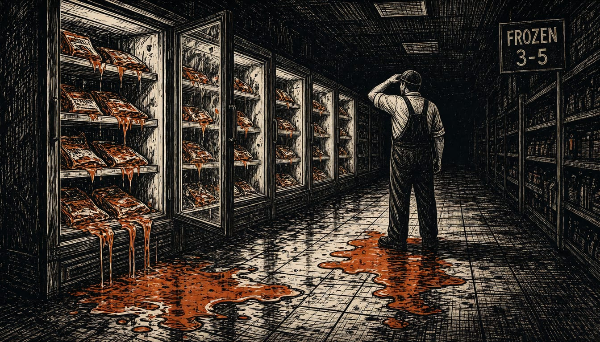

Hackers hit freezers at 700 French supermarkets, Paris blames Iran
France's Cyber Crisis Coordination Centre named Iran's Shahid Kaveh cyber unit in a report on Monday. One German store owner says he threw away goods worth over 360,000 euros.

Attackers hacked the freezers at about 700 supermarkets in France in October, a new report says. France's Cyber Crisis Coordination Centre made the attribution in a five-page report published on Monday.
The damage landed on shop owners. German food retail association said the freezer failures there stayed isolated and that supply of food is fully unrestricted. But one owner in Lilienthal, near Bremen, Daniel Breiding, said his store had to throw away goods worth over 360,000 euros. The wider picture is disputed: Moscow Times reported that hackers hit cooling systems in nearly 100 stores across at least 11 European countries. Moscow Times reported the attacks ran over three weeks.
Paris has opened a judicial investigation against the head of Iran's Shahid Kaveh cyber unit, two deputies and other unidentified suspects. Prosecutor Laure Beccuau said on Monday her office has asked for international arrest warrants. France will also summon the Iranian ambassador to tell him its firmest condemnation of the cyberattacks. Paris plans to propose new sanctions to its European partners against the Iranian individuals and entities behind the attacks and other malicious cyber activities.
The freezers followed an earlier cyber campaign. In April, the Shahid Kaveh unit scanned Schneider Electric industrial control systems at sites in France through the protocol on port 502. France's cyber agency, ANSSI, said the hackers also went after the same equipment at several small hydroelectric plants at the same time. The foreign ministry called the campaign the first purely sabotage-driven cyber offensive on French territory. The ministry said the unit is a lasting threat to critical infrastructure.
Who did it stays open in part. The pro-Russian groups NoName057(16) and Z-Pentest claimed responsibility on Telegram in early November, but Unit 42, a threat research team at Palo Alto Networks, says the claims are unverified. Threat researchers told the Financial Times a Russian-linked group was 'very likely' behind them. Danfoss, the Danish maker of the attacked cooling systems, said many hit models were older devices with no software updates left. For newer devices, updates had in part not been installed.